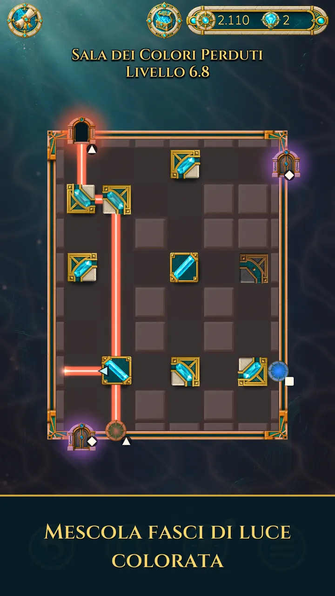
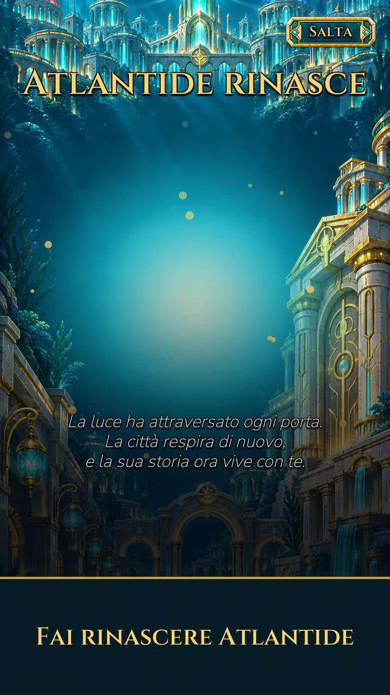

Rompicapo per Android
AtlantideGates of Light
Sotto il mare dorme Atlantide. Le sue porte si aprono solo alla luce. Ruota i cristalli, spingi le pietre, sfrutta le correnti e dividi i raggi con i prismi: porta la luce a ogni porta e riaccendi la città, sala dopo sala.
In arrivo su Google Play

Che cosa c’è dentro
- 100 enigmi in 10 sale. Progettati uno per uno. Ogni sala aggiunge un’idea nuova: correnti di luce, maree, prismi, luce colorata, portali gemelli.
- Una Torre che non finisce. Ogni piano è un po’ più difficile del precedente, mai esagerato.
- Un enigma nuovo ogni giorno. Facile il lunedì, difficile la domenica.
- Una città che rinasce. Ogni sala completata riaccende un quartiere di Atlantide e svela un pezzo della sua storia.
- Al tuo ritmo. Annulli e ricominci quando vuoi. Se ti blocchi, un aiuto ti mostra la mossa giusta.
- Pensato per il telefono. Si gioca con una mano, anche senza connessione (i video con premio richiedono internet). In sei lingue.




Soldi e pubblicità in Atlantide
Ogni livello si risolve senza pagare. Non c’è energia e non ci sono vite. Queste sono le regole in vigore oggi; se cambiano, lo scriviamo qui.
- Nei primi 10 livelli non compare nessun annuncio a tutto schermo.
- Dopo, tra un annuncio e l’altro passano almeno due minuti e mezzo e almeno tre livelli.
- In una sessione di gioco non ne compaiono più di cinque.
- Nella Torre un annuncio può comparire ogni cinque piani, a partire dal piano 11.
- I video con premio li scegli tu: nessuno parte da solo.
Che cosa si può comprare: togliere la pubblicità, pacchetti di monete e di aiuti, il salvadanaio e gli aspetti estetici, che cambiano i colori e non danno vantaggi. Nessuna cassa a sorpresa. I prezzi sono su Google Play.
Sono le regole dello studio, applicate a questo gioco.
Come è fatto
Atlantide è stato creato con l’aiuto di strumenti di intelligenza artificiale: codice, grafica e audio. Le scelte sono di Gaetano. Chi fa che cosa.
I tuoi dati
Nessun account e nessuna registrazione. I progressi restano sul tuo telefono. Tutto il resto è nell’informativa sulla privacy.